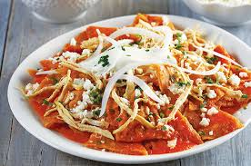
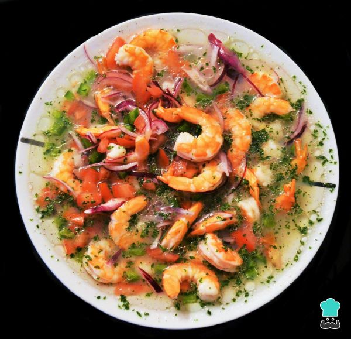
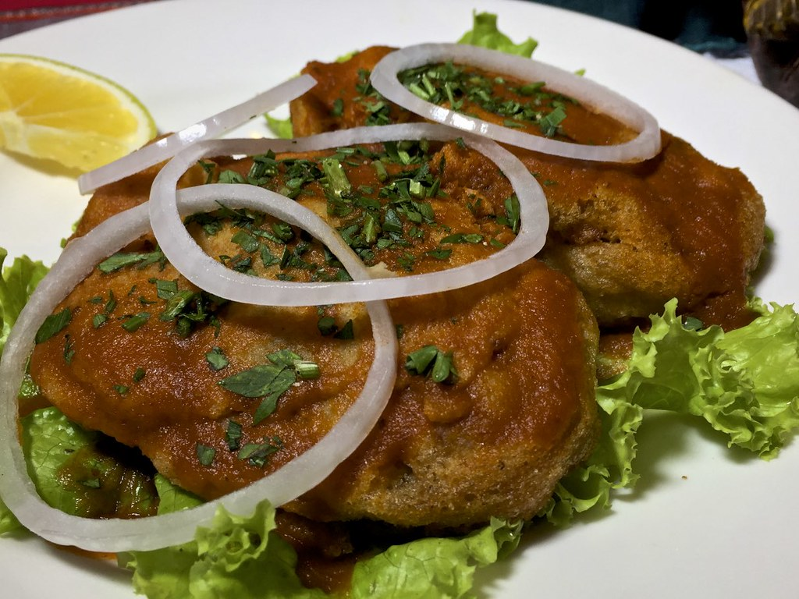

Ingredientes: 1 1/2 libras de pollo cocido desmenuzado 16 tortillas de harina 1 libra de queso mozarella rallado 8 oz. de crema 16 oz de salsa (natural o la de tu preferencia) Aceite para freír 3 huevos 1 cucharada de harina Procediemiento: En un contenedor revuelve el pollo con 12 onzas del queso mozarella y la crema. Reserva el resto del queso para más adelante.Aplica una cucharada de la mezca a cada tortilla y dóblalas por la mitad. Calienta el aceite en un sartén. Bate los huevos Remoja cada una de las tortillas en el huevo batido y ponlas a freír hasta que estén doraditas por ambos lados.Colócalas en un molde apto para horno formando una fila de las tortillas y aplica un poco de la salsa, agrega otra fila de tortillas y más salsa, continúa hasta colocar todas las tortillas en el molde terminando con salsa y el resto del queso mozarella por encima. Hornéa por 15 minutos. 
Ingredientes: 1 libra de camarones medianos 5 libras de tomate 1 cebolla grande 1/2 manojo de cilantro 1/2 taza de jugo de limón 1 taza de jugo de tomate salsa ketchup salsa inglesa (worstershire) sal al gusto Procediemnto:Coce el camarón: Pela los camarones, coloca una olla con agua al fuego y cuando empiece a herbir deja caer los camarones y retira del fuego inmediatamente, cuando los camarones cambien de gris a color naranja retira el agua. Si los dejas herbir mucho tiempo se recocerán y cambia el sabor del ceviche. Si piensas que los dejaste mucho tiempo agrégales cubos de hielo para detener la cocción Si los camarone son pequeños puedes dejarlos enteros, sino pártelos por la mitad. Pónlos a remojar en jugo de limón por 30 minutos Pica la cebolla, los tomates y el cilantro, agrega los camarones y sazona con ketchup, salsa inglesa. 
Ingredientes: 15 chiles pimientos frescos 1 libra de carne de marrano 1 taza de arveja 1 taza de ejote y zanahoria picados 4 tomates pelados 2 cucharadas de vinagre 1 cebolla 4 dientes de ajo 8 huevos 2 cucharaditas de harina aceite pimienta, sal, laurel y tomillo Preparacion: Asa los chiles y colócalos dentro de una bolsita ziploc por 10 minutos, pélalos y sácales las semillas. Sazónalos con vinagre sal y pimienta.Cocina la carne con sal al gusto y pícala.Cocina las arvejas zanahoria y ejote sazonando con sal al gusto.Prepara un recado frito con el tomate picado, cebolla, ajo, laurel, tomillo, sal y pimienta al gusto. Agrega la carne picada y las verduras cocidasescurridas.Rellena los chiles con el sofrito anterior y pásalos por harina.Bate huevoEnvuelve los chiles con el huevo y fríelos hasta que se doren por ambos lados.Sirve tus chiles rellenos con cebolla condimentada con orégano y perejil picado por encima. Puedes acompañarlos con arroz blanco o comerlos con pan francés. 